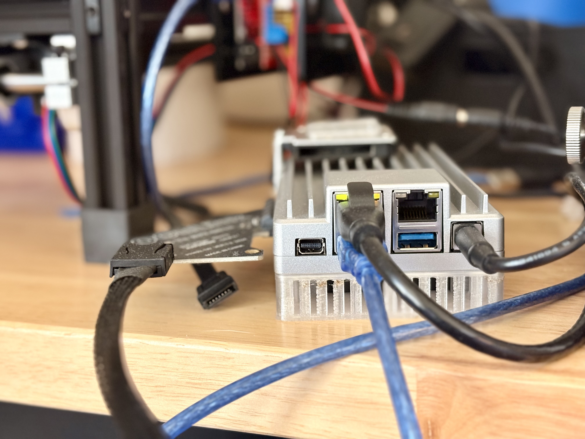
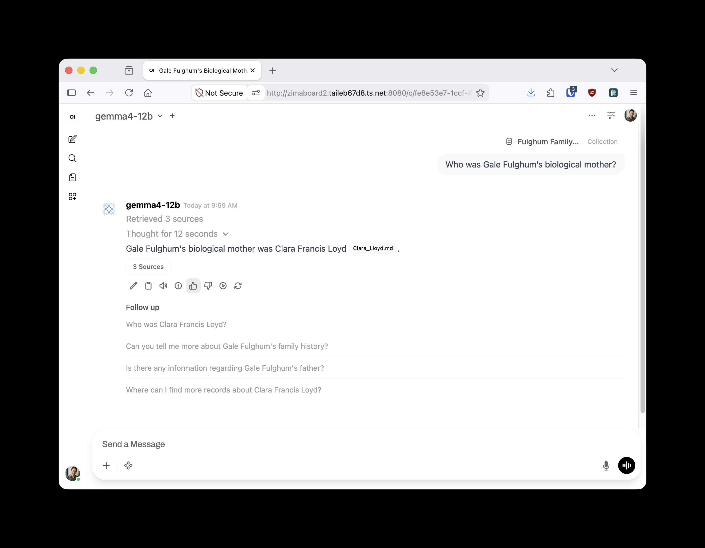
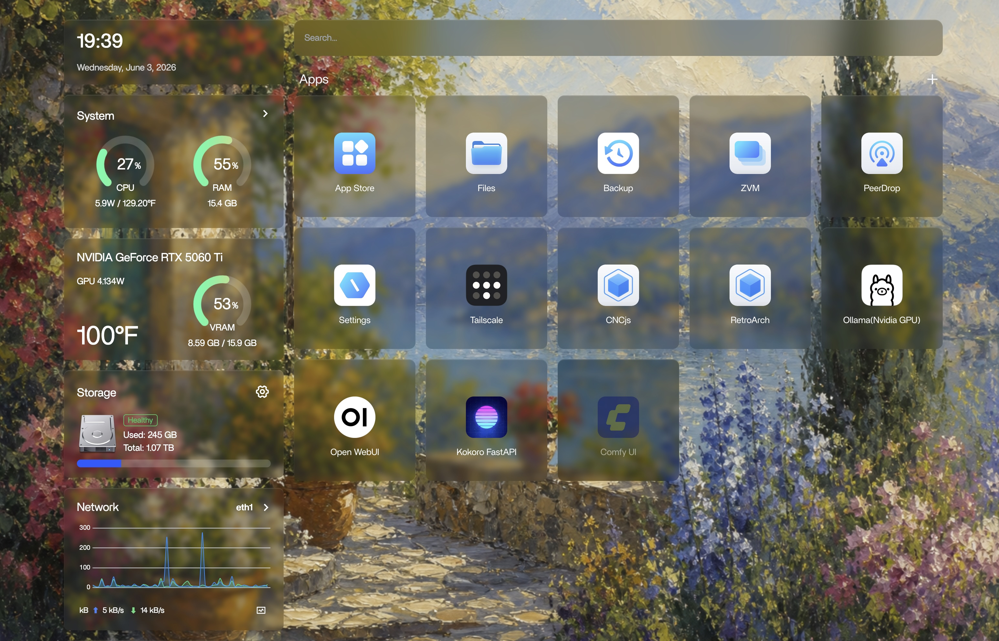
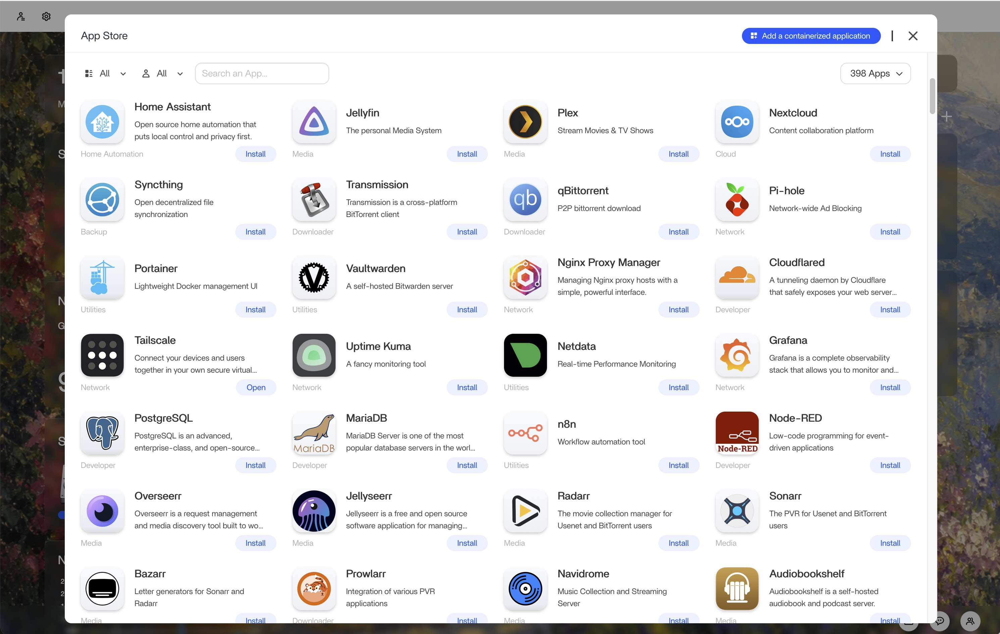

by Jordan Fulghum, June 2026
A local LLM, a family vault, and one tiny computer with a ridiculous GPU hanging off it.

ChatGPT has become the interface my family understands. Type a question, get an answer, keep going. My wife and kids do not want to SSH into anything, manage prompts, pick models, or learn the difference between a tool call and a RAG query. They want the box.
I wanted that same shape at home, but private, grounded in our actual family documents, and steerable toward our values instead of some global average.
So I built a private ChatGPT for our family.
This is different from the OpenClaw-style path. I understand the appeal of stuffing an AI assistant into Telegram, WhatsApp, or iMessage, but that is the wrong abstraction for my family.
Those setups usually start by asking for integrations, permissions, authentication, passwords, and some pile of glue code before anyone has even asked a useful question. Then the payoff is a bot wedged into a chat app where people already talk to humans.
The ChatGPT interface won for a reason. My family already knows it. I wanted to keep that part.
The machine is a ZimaBoard 2 with 16GB of RAM and a 1TB SSD. It runs ZimaOS, a friendly home-server control surface with apps, file management, monitoring, and enough polish to make the whole thing feel coherent.
Then I did something silly and plugged it into an external GPU dock with an ASUS GeForce RTX 5060 Ti 16GB. The GPU is many times bigger than the computer it serves, which makes the whole rig look completely absurd in the best possible way.
I covered the broader self-hosting shift in 2026 is the year of self-hosting, but this is the most emotionally obvious version of it so far. Cheap hardware, private networking, local inference, and coding agents have collapsed the distance between “that would be cool” and “AGI is running on my desk right now, and I can watch it sweat.”
The stack is pretty simple:
| Part | Job |
|---|---|
| ZimaOS | Host, files, app management, monitoring |
| llama.cpp | Local inference layer |
| Gemma 4 12B | The local model I am running right now |
| Open WebUI | The ChatGPT-shaped interface my family can actually use |
| Kokoro | Text-to-speech so my kids can listen to responses instead of reading everything |
| ComfyUI | Local diffusion and image generation |
| Tailscale | Private access from our devices without exposing the server to the internet |
Open WebUI is basically an unapologetic clone of ChatGPT's interface, plus the admin knobs you want for a home setup: model management, users, system prompts, knowledge bases, tools, and all the weird settings you can ignore until you need them.


The app story is also a big part of why this feels approachable. ZimaOS has an app store with one-click installs for a bunch of off-the-shelf containerized services: Plex, Home Assistant, Tailscale, Postgres, Vaultwarden, Uptime Kuma, and plenty more. If the thing you want is not listed, you can still add a containerized app directly. That lowers the activation energy a lot.

The best part is that the hard problems are not that hard anymore. When the NVIDIA runtime gets weird, I can ask Claude to diagnose it. When a container does not see the GPU, I can paste logs and let the agent work through it. A few years ago this would have turned into a weekend of forum spelunking. Now it is mostly describing the desired end state and supervising.
The model matters, but the documents are what make it useful for our house.
I have a family vault with our family history, financial documents, health records, kids' education data, mortgage documents, tax records, and the kind of boring PDFs that become very important at random times. All of that lives in a NAS directory that syncs from my MacBook to the ZimaBoard.
Open WebUI can embed those documents into a vector database. Models with tool use can then go retrieve the relevant chunks before answering. So instead of asking a generic chatbot a generic question, I can ask a private local model a question grounded in our actual source material.
This connects nicely to my Jamestown genealogy project. That project produced a structured vault of people, sources, relationships, and claims. Now that vault can sit next to the rest of the family's documents and become queryable in the same interface.
That is a much more interesting family assistant than “tell me a recipe for chicken.” I want to ask what a document means, which claim is sourced, when something changed, what we paid last year, what a school note says, how a medical result compares to the prior one, or what a decision might imply for our actual household.
The privacy angle is obvious, but it is not the only reason I care.
The more important thing is steering. A family has values, goals, constraints, and weird little principles. We have ways we think about money, school, health, faith, responsibility, screens, sleep, food, and attention. I do not want to outsource all of that to Sam Altman or anyone else and hope the average-product default happens to fit us.
With a local family assistant, the system prompt can be ours. Be direct. Be calm. Respect our budget. Do not optimize for engagement. Help the kids reason instead of handing them answers. Prefer family context over internet averages. When tradeoffs exist, say so plainly.
Writing that prompt was also worth doing for its own sake. It forced us to say out loud what we actually want help to feel like in our house. What do we value? What tone do we want around our kids? When should the assistant push back? When should it stay out of the way? That exercise was challenging, fun, and weirdly introspective.
That sounds small, but it changes the product in a meaningful way. If intelligence is going to be ambient in the home, I want some say in its posture.
Everything important is on our tailnet. My devices, my wife's devices, the kids' devices, and the ZimaBoard all run Tailscale. There is no public login page sitting on the open internet. From our perspective it feels like a normal website. From everyone else's perspective it does not exist.
This is the same reason the album cards project worked so well. The best family technology does not feel like infrastructure. It feels like a thing in the house that does something useful. Pick up a card and music plays. Open a familiar chat box and the family vault answers.
This is not for everyone yet, but the circle is getting bigger fast.
If you are the technical dad in the house, or the technical mom, or the family member who already runs Plex and fixes the Wi-Fi, this is now within reach. You still need to be comfortable with hardware, local networking, containers, and the occasional GPU tantrum. But you do not need to be an infra wizard. The agents are good enough to help you through the boring parts.
The point is not to beat frontier models. I still use ChatGPT, Claude, and Gemini all day. The point is to have a private family intelligence layer that knows our context, keeps our documents close, and reflects the way we want help to sound inside our home.
Follow me on Twitter for more.